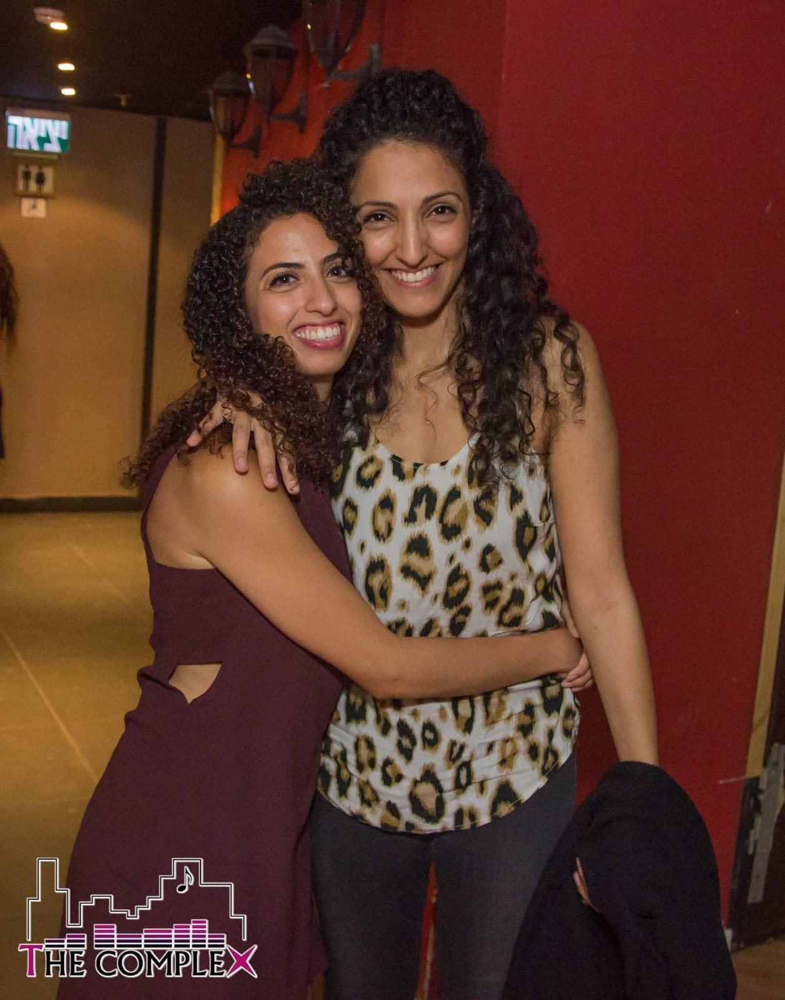
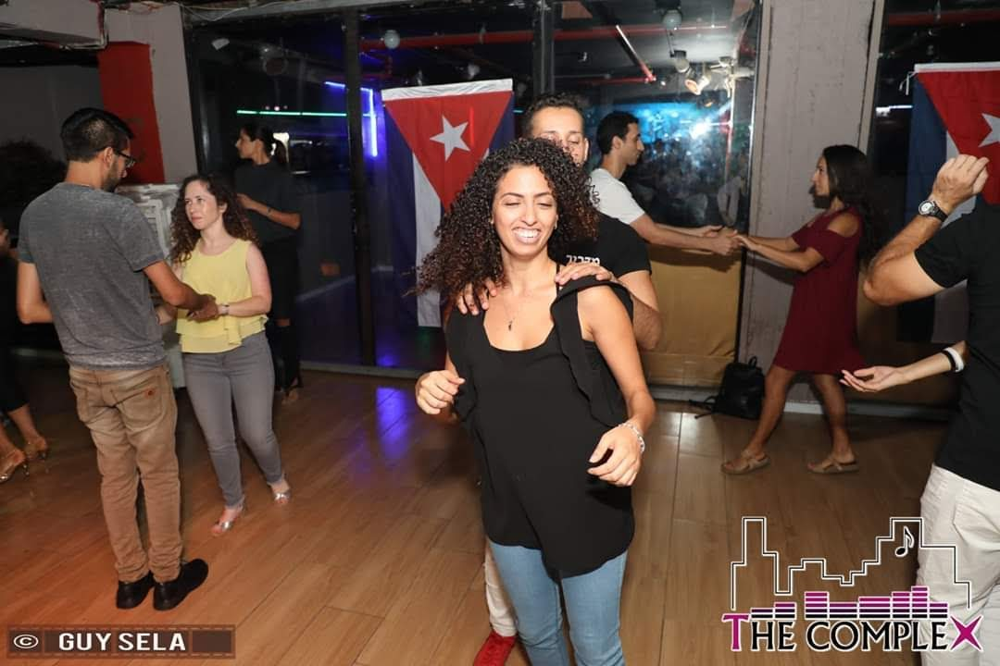
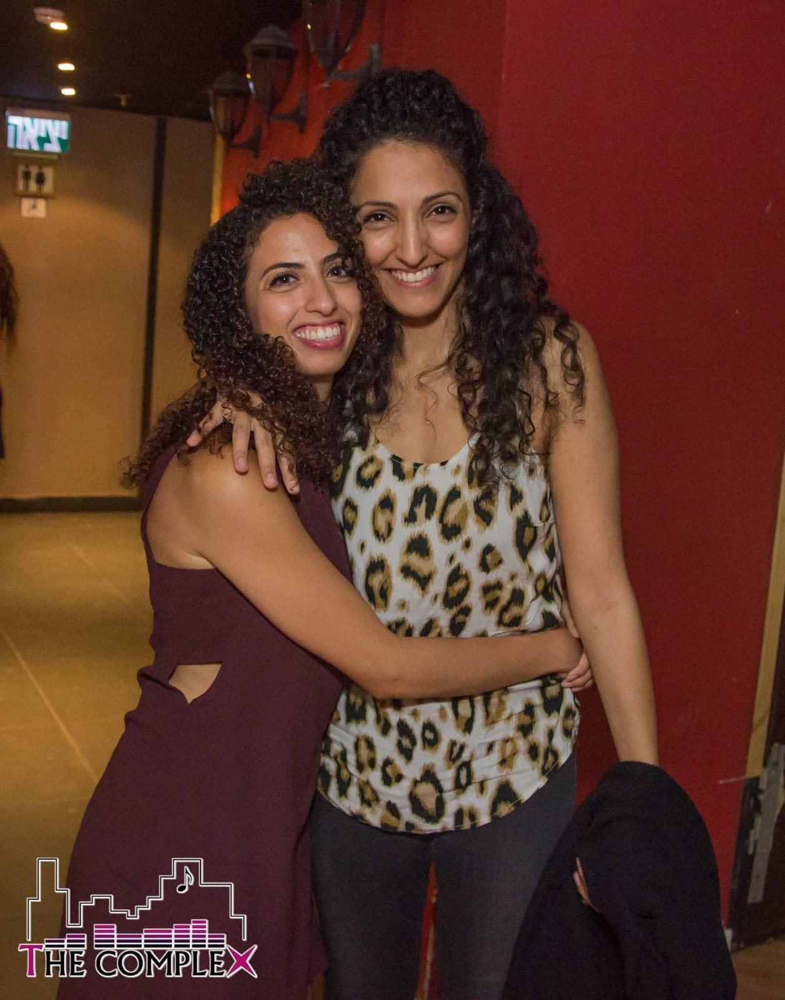
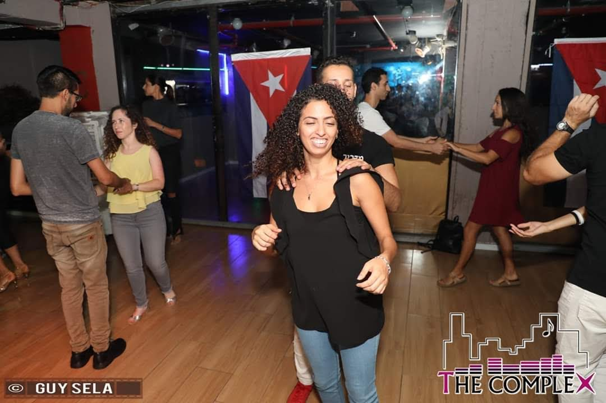

ההיכרות הראשונה שלי עם הדבר המדהים הזה שנקרא 'סלסה' הייתה בכיתה ח'. הגיעו אלינו לחטיבה אנשים ומי שרצה ללמוד נשאר אחרי הלימודים. היינו 5 אנשים במקסימום (בעיקר בנות). למדנו צעדי בסיס, 'די לה קה נו' (=תגידי לו שלא), אינשופלה (סיבוב במילים אחרות), וואפאה.
הסלסה הקובנית מקורה בקובה, ניתן לרקוד אותה בזוגות, במעגל מסונכרן (רואדה) שכולם רוקדים את אותו הדבר עפ"י החלטת מוביל הרואדה או כזוגות. ישנם ארגונים התנדבותיים חינמיים בסגנון מדיה נוצ'ה שזהו ארגון שמורכב ממתנדבים בלבד, שמתקיים עפ"י 2 העקרונות: מי שיודע מלמד את מי שלא יודע ואם לא תעשו לא יהיה. בנוסף אליהם ישנם בתי ספר מקצועיים שנולדו עם הזמן שם ניתן למצוא מדריכים מנוסים שעברו הכשרה מסוימת ומלמדים את הריקוד בשיטה של אותו בית הספר. ברוב המקומות שפועלים בין פעמיים לשלוש בשבוע מתקיימת הדרכה בת שעה ולאחריה מסיבה בה ניתן לתרגל את מה שנלמד בשיעור. השיעור מחולק לפי רמות וסגנונות ריקוד כגון: בצ'אטה, סלסה L.A , קיזומבה, רומבה רומנטית ועוד.
באותה תקופה שהתגייסתי אחותי סיפרה לי שהיא התחילה לרקוד סלסה לפני כמה חודשים. כשהכרתי את הדר בטירונות, שגם היא גרה בתל אביב, התחלנו לצאת כל סופ"ש והיינו הולכות קבוע לסטודיו B שבאבן גבירול. עלינו ברמות ויצא לי לרקוד עם רקדנים ממש טובים, היה כיף לרקוד איתם וככה ראיתי מה הסלסה יכולה להיות.
לאורך השנים הייתי הולכת כמה חודשים ברצף ואז הפסקה של כמה שנים, וחוזר שוב. הכרתי אפילו מקומות אחרים ללמוד ולרקוד בהם: הוואנה, הקומפלקס, רוטב סלסה והפנורמה. אפילו ניסיתי ללכת לפסטיבל סלסה באילת, מסתבר שזה פחות מתאים לי. גיליתי שכיף יותר לרקוד עם מדריכים ומדריכות, שאני לא יכולה לשתות ולרקוד, שאם אחותי זאת שאני רוקדת איתה אני יכולה לרקוד אפילו באמצע הרחוב למרות שיש לי פחד קהל.
אחרי שנים שלא רקדתי, חלק בגלל הקורונה וחלק בגללי, אני ואחותי רקדנו ביריד בנמל עין גב בסוף ינואר. עשינו זמן איכות משפחתי אני, אחותי, בעלה ואחיין שלי. רקדנו על רצפה לא נוחה (אי אפשר להחליק), רקדנו במעגל עם עוד אנשים, עשינו "פסטיבל בלאגן" (שם של תרגיל), החמיאו לנו, היה ממש מהנה.
 


